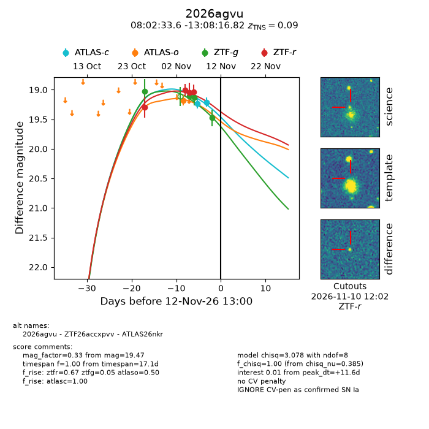
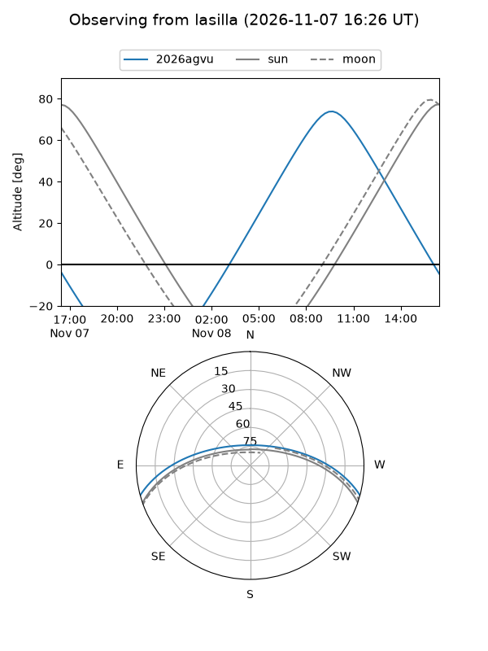
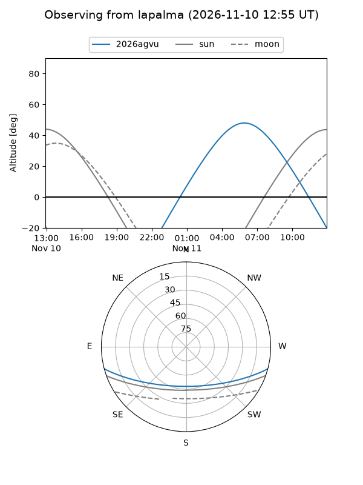
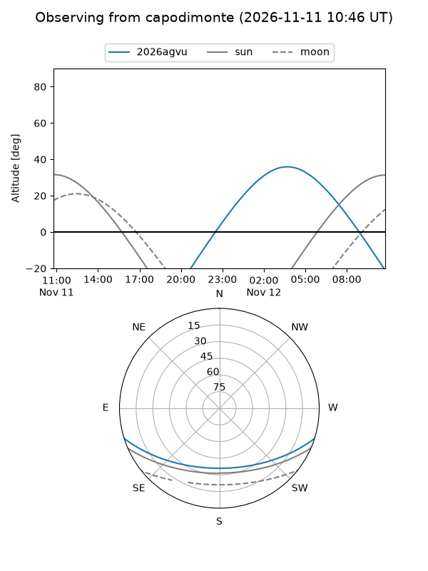
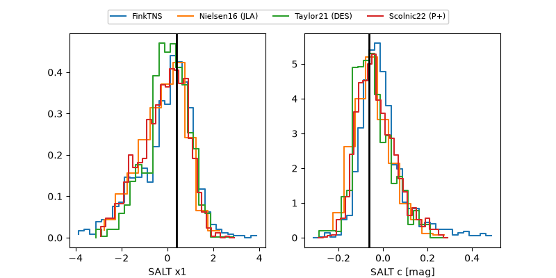

2026agvu
Target 2026agvu at 2026-11-12 13:02
Aliases and brokers:
FINK-ZTF: ztf.fink-portal.org/ZTF26accxpvv
Lasair-ZTF: lasair-ztf.lsst.ac.uk/objects/ZTF26accxpvv
ALeRCE-ZTF: alerce.online/object/ZTF26accxpvv
YSE-PZ: ziggy.ucolick.org/yse/transient_detail/2026agvu
TNS name: wis-tns.org/object/2026agvu
Direct TNS query: direct search
alt names
ZTF26accxpvv (ztf,fink_ztf)
2026agvu (tns,yse)
ATLAS26nkr (atlas)
Coordinates:
equatorial (ra, dec) = 120.6402,-13.13800
equatorial (HMS+DMS) = 08:02:33.64,-13:08:16.82
galactic (l, b) = (232.9527,+9.26622)
Flags:
TNS type: SN Ia
TNS redshift: 0.0900
peak dt: +11.6
Photometry:
last atlasc=19.21, atlaso=19.18, ztfg=19.47, ztfr=19.03
2 atlasc, 1 atlaso, 4 ztfg, 4 ztfr detections
Lightcurve

Visibility



Additional plots
